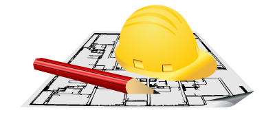

Архітектор мети
Виготовлення першокласного бетону, як і приготування кулінарних шедеврів потребує дотримання суворого порядку та пропорцій. Вибрати найякісніші компоненти як для повсякденних так і для бетонних "страв" може гарантувати тільки практика та досвід шеф кухаря. Небезпека полягає в тому, що бетон ви не можете скуштувати на смак і так поставити йому якісну оцінку. Для цього потрібна сертифікована лабораторія з відповідним обладнанням та спеціалістами, які обслуговують наше підприємство. Не останнім позитивним фактором являється кінцева ціна на продукцію нашого виробництва, яка сформована завдяки оптимальному виборі гуртових постачальників сировини до бетону на ринку України. Ну і звичайно найважливіше для досягнення відмінного результату - є докласти до цієї не легкої справи душу та відповідальність,  шукаючи шляхи постійного вдосконалення. Це і є основа політики підприємства Бетонікс, який рішуче прагне ідеалу, для затишку та безпеки Ваших домівок та конструкцій.
Наші товари та послуги
- Виготовлення товарного бетону:
- М-100 (В7.5)
- М-150 (В10)
- М-200 (В15)
- М-250 (В20)
- М-300 (В25)
- М-350 (В25)
- М-400 (В30)
- Доставка бетону автобетонозмішувачами на об’єкт.
- Можливість подачі бетону бетононасосом.
- Продаємо гранітний щебінь, пісок.
- Надаємо транспортні послуги та послуги спецтехніки.
Контакти
факс: (032) 245-29-19
моб.: 067 314-05-24
Вверх